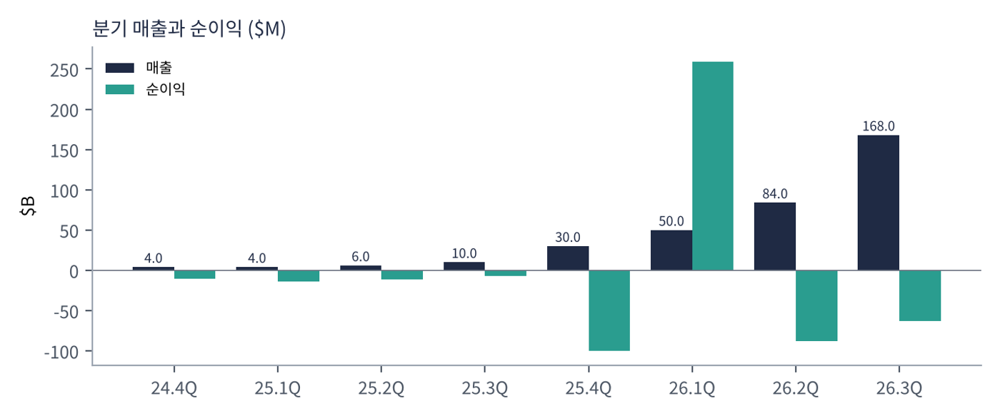
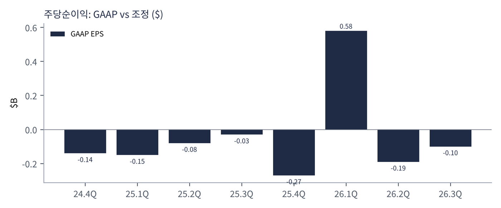
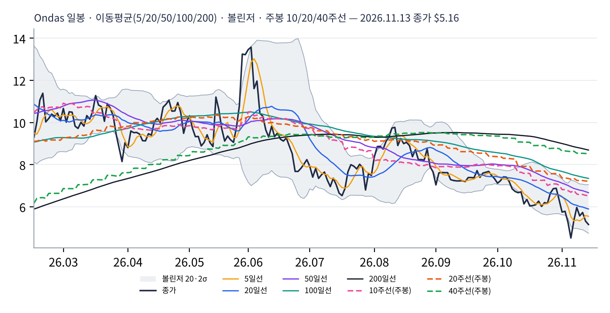
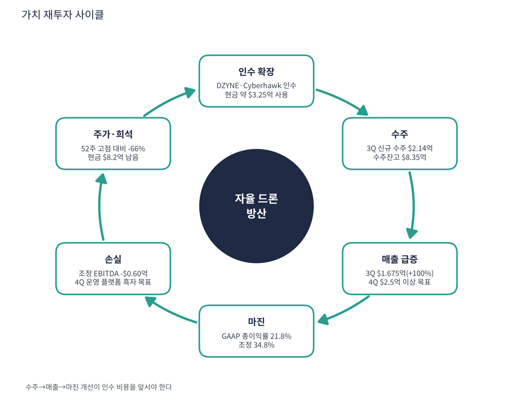

온다스는 자율 드론·무인 지상차량·방산 전자 장비를 만드는 회사다. 올해 DZYNE과 Cyberhawk 등을 사들이며 몸집을 키웠고, 미 육군 대형 계약(IDIQ) 아래 정밀 타격·감시 장비를 납품한다. 3분기 매출이 $1.675억으로 두 배가 됐지만 총이익률은 21.8%로 낮고, 현금 $8.2억이 남은 상태에서 인수·성장 투자로 손실을 내는 회사다.
| 항목 | 내용 |
|---|---|
| 종목 | Ondas Inc. (ONDS) · NASDAQ · 자율 드론·방산 · 본사 미국 플로리다주 웨스트팜비치 |
| 밸류에이션 | PER 235.6배(TTM, 1분기 이익으로 왜곡) · P/S 9.9배(스캐너) (11/13 종가 $5.16) |
| 최근 분기(3Q26) | 매출 $1.675억(전분기 $0.838억 대비 +100%), 순손실 $0.65억, EPS -$0.10, 조정 EBITDA -$0.597억 |
| 수주 | 3Q 신규 수주 $2.14억, 수주잔고 $8.35억(전분기 대비 +36%) |
| 현금·차입 | 현금·제한 현금·단기투자 $8.2억(6월 말 $14억), 차입금 약 $0.06억 |
| 가이던스 | 2026 매출 $5.5억 이상(기존 $5.25~5.5억), 4Q 매출 $2.5억 이상, 2027 매출 $11억 이상(추가 인수 제외) |
| 이익 목표 | 4Q26 운영 플랫폼 조정 EBITDA 흑자, 전사 조정 EBITDA 흑자는 2027 3Q(기존 2027 4Q) |
| 다음 실적 | 4Q26 실적: 2027년 3월 17일 예정(트레이딩뷰) |
| 직책 | 인물 | 역할·특징 |
|---|---|---|
| 회장·CEO | 에릭 브록 | 수주잔고 성장과 인수 통합을 앞세우고, 연간 매출 목표를 계속 올려 왔다 |
경영 스타일: '인수와 수주로 규모를 먼저 키우고 이익은 뒤에 맞춘다'. 올해 들어 연간 매출 목표를 네 차례 올렸다. 3Q 조정 현금 영업비용은 $1.187억으로 전분기 $0.888억보다 늘었다. 3Q부터 조정 EBITDA에서 인수 관련 재고 평가 상승분·통합 비용 등을 빼는 항목이 새로 추가돼 이전 분기와 직접 비교가 어렵다.
공중·지상 무인 장비와 정밀 타격·감시 솔루션을 묶어 군과 보안 고객에 판다.
인수한 기업들을 하나의 플랫폼으로 묶어 2027년 매출 $11억 이상을 목표로 한다.
| 분기 | 매출 | 순이익 | EPS | 조정 EPS | 특이 사항 |
|---|---|---|---|---|---|
| 2024.4Q | $0.04억 | -$0.10억 | -0.14 | – | |
| 2025.1Q | $0.04억 | -$0.14억 | -0.15 | – | |
| 2025.2Q | $0.06억 | -$0.11억 | -0.08 | – | |
| 2025.3Q | $0.10억 | -$0.07억 | -0.03 | – | |
| 2025.4Q | $0.30억 | -$1.00억 | -0.27 | – | |
| 2026.1Q | $0.50억 | +$2.59억 | 0.58 | – | 영업외 이익으로 흑자(원인 미확인) |
| 2026.2Q | $0.84억 | -$0.88억 | -0.19 | – | 인수 비용·비현금 비용 증가 |
| 2026.3Q | $1.68억 | -$0.63억 | -0.10 | – | 수주잔고 $8.35억, 매출 +100% |


온다스는 조정 EPS를 발표하지 않고 조정 EBITDA만 발표해 조정 EPS 열은 '–'이다. 매출·순이익은 트레이딩뷰 스캐너 값(백만 달러 반올림, 순이익은 3Q 지배주주 귀속 -$0.63억이며 총 순손실은 -$0.65억)이다. 트레이딩뷰 Reported EPS는 4Q25 -0.34, 1Q26 +0.81로 스캐너 GAAP 값(-0.27, +0.58)과 다르며 원인은 확인하지 못했다. 표는 스캐너 GAAP 값이다.
흐름 요약: 매출은 4Q24 $0.04억에서 3Q26 $1.68억으로 늘었다. 순이익은 1Q26에 +$2.59억 흑자(영업외 이익으로 보이나 원인 미확인)였고 그 외 분기는 손실이다. 3Q26 GAAP 매출총이익률은 21.8%(매출 $167.5M, 매출원가 $131.0M)이다. 영업이익과 분기 설비투자의 8분기 값은 구하지 못해 표에서 뺐다.
| 구분 | 내용 | 비고 |
|---|---|---|
| 정밀 타격·ISR(감시) | 육군 IDIQ($9.82억 한도) 아래 수주 누적 $2.4억 이상(2Q 보도) | 7월 $0.529억 치명 무인 타격 주문 |
| 항공·지상 무인 장비 | 드론, 무인 지상차량, 보안 솔루션 | 세부 매출 배분은 확인하지 못함 |
| 인수 사업(DZYNE·Cyberhawk) | 3Q에 편입, 인수 대금 $3.25억 사용 | 가격 개별 내역 미공개 |
| 2026 매출 전망 | $5.5억 이상 | 1~3Q 합계 $3.01억(0.50+0.84+1.68), 4Q $2.5억 이상 필요 |
| 2027 매출 목표 | $11억 이상 | 추가 인수 제외 |
매출 성장 상당 부분이 인수 효과다. 회사가 밝힌 인수 포함 기준 동일 포트폴리오(pro forma) 3Q 성장률은 +64%다.
온다스의 방향은 '인수로 모은 자율 방산 기업을 하나의 플랫폼으로 묶고, 수주잔고를 매출로 바꾸며 흑자 전환하는 것'이다.
| 축 | 최근 움직임 |
|---|---|
| 수주 | 3Q $2.14억, 잔고 $8.35억(+36%) |
| 매출 | 4Q $2.5억 이상, 2027 $11억 이상 |
| 이익 | 운영 플랫폼 4Q26 흑자, 전사 2027 3Q 흑자(1분기 앞당김) |
| 자금 | 현금 $8.2억, 차입금 거의 없음 |

| 이동평균 | 값 | 종가 대비 | 해석 |
|---|---|---|---|
| 5일선 | $5.55 | -7.0% | 현재가가 아래 |
| 20일선 | $5.90 | -12.5% | 현재가가 아래 |
| 50일선 | $6.67 | -22.6% | 하향 |
| 100일선 | $7.35 | -29.8% | 하향 |
| 200일선 | $8.70 | -40.7% | 현재가가 크게 아래 |
주봉 흐름: 2025년 10월 $10~11 → 11월 $6~8 → 2026년 1월 고점 $15.3(1/12) → 3월 $10 → 5~6월 $13.2 → 7월 $7.3 → 8월 $9 → 9~10월 $6~7 → 11/2 주 저가 $4.4(52주 저점) → 11/9 주 종가 $5.2.
| 규칙 | 기준 | 현재 값 | 신호 |
|---|---|---|---|
| 장기 추세 필터 | 종가 vs 200일선 | $5.16 < $8.70 | 매도 |
| 중장기 교차 | 50일선 vs 200일선 | $6.67 < $8.70 | 매도 |
| 단기 교차 | 20일선 vs 50일선 | $5.90 < $6.67 | 매도 |
| 돈키언 채널 | 55일 고가 $8.71 / 저가 $4.38 | 중간값 $6.54 아래 | 매도 |
| 1개월 모멘텀 | 21거래일 수익률 | -18.7% (기준 $6.35) | 매도 |
| 3개월 모멘텀 | 63거래일 수익률 | -42.7% (기준 $9.00) | 매도 |
| 6개월 모멘텀 | 126거래일 수익률 | -51.4% (기준 $10.62) | 매도 |
| 12개월 모멘텀 | 252거래일 수익률 | -6.4% (기준 $5.51) | 매도 |
| 종합 (8개 평균) | -1.00 | 강한 매도 |
해석: 8개 신호 모두 매도로 -1.00(강한 매도). 12개월 모멘텀 기준 $5.51과는 $0.35 차이라 가장 먼저 바뀔 신호다. 14일 ATR $0.56 (10.9%)(가격의 약 11%).
| 가격 | 무엇이 바뀌나 | 의미 |
|---|---|---|
| $5.51 상향 돌파 | 12개월 모멘텀 | 매도 → 매수(점수 -0.75) |
| $6.35 상향 돌파 | 1개월 모멘텀 | 추가 1개 전환 |
| $6.55 상향 돌파 | 돈키언 중간값 | 55일 채널 전환 |
| $8.70 상향 돌파 | 200일선 | 장기 추세 필터 전환 |
| $9.00 상향 돌파 | 3개월 모멘텀 | 추가 1개 전환 |
| 구분 | 가격대 | 근거 |
|---|---|---|
| 저항 1 | $5.5 ~ 5.9 | 5일선·20일선·12개월 모멘텀 |
| 저항 2 | $6.35 ~ 6.7 | 1개월 모멘텀·50일선 |
| 저항 3 | $7.35 | 100일선 |
| 지지 | $4.38 | 52주 저점(11/5) |
추세 추종으로는 매수 구간이 아니다. 4Q 매출 확인을 기대하고 접근한다면 $4.5~5.2에서 계획 비중의 30%만 진입하고 종가 $4.2(52주 저점 $4.38 아래) 이탈 시 손절한다. 1차 목표 $6.35(1개월 모멘텀), 2차 $6.7(50일선, 내 가정). 변동성이 크니 비중을 작게 가져간다.
| 악재 요인 | 내용 | 강도 |
|---|---|---|
| 낮은 총이익률 | 3Q GAAP 매출총이익률 21.8%(조정 34.8%) | 높음 |
| 인수 의존·통합 | 매출 급증 상당 부분이 인수 효과, 동일 포트폴리오 성장률은 +64% | 높음 |
| 조정 지표 변경 | 3Q부터 새 조정 항목 추가, 이를 빼면 조정 EBITDA 손실이 약 $0.77억(보도) | 중간 |
| 현금 감소·희석 | 3Q 약 $5.8억 감소, 추가 인수·자금 조달 가능성 | 중간 |
| 제3자 위험 | 국방 예산·계약 일정·수주 전환 속도 등 정량 갱신 없음 | 참고 |
| 티커 | 회사 | PER(TTM) | PEG | P/S | EPS 성장(YoY) |
|---|---|---|---|---|---|
| ONDS | 온다스 | 235.6배 | – | 9.92배 | +0% |
| RCAT | 레드캣 | 적자 | – | 7.53배 | -111% |
| KTOS | 크라토스 | 276.8배 | – | 3.98배 | -0% |
| AVAV | 에어로바이런먼트 | 적자 | – | 3.01배 | -538% |
모두 트레이딩뷰 GAAP TTM 기준이다. PER은 일회성 영향이 커 의미가 작다(ONDS는 1Q26 이익 효과). 적자는 PER '–' 처리. 사업 구조가 달라 참고용이다.
ONDS는 현금 $8.2억에 차입금이 거의 없어 당장 버틸 힘은 있지만, 3Q에 현금이 약 $5.8억 줄었다. 이 중 $3.25억은 인수 대금이다(6월 말 $14억 → 9월 말 $8.2억).
| 지표 | 값 | 계산·출처 | 해석 |
|---|---|---|---|
| 현금·제한 현금·단기투자 | $8.2억 | 회사 발표 | 현금 $2.63억 + 제한 현금 $0.32억 + 단기투자 $5.26억 |
| 차입금 | 약 $0.06억 | 재무상태표 합산(내 계산) | 워런트·조건부 대가는 제외 |
| 순현금 | 약 $8.1억 | 내 계산 | 주당 약 $1.3(가중평균 6.18억 주 기준) |
| 3Q 현금 감소 | 약 $5.8억 | 내 계산(14억 → 8.2억) | 인수 $3.25억 포함, 나머지 약 $2.55억은 구성 미확인 |
| 상반기 영업현금 사용 | $1.374억 | 6월 실적 보도 | 분기 평균 약 $0.69억 |
| 가정 | 분기 현금 사용 | 남은 분기 | 비고 |
|---|---|---|---|
| 3Q 감소분 중 인수 제외분 지속 | $2.55억 | 약 3.2분기 | 구성이 확인되지 않아 보수적 가정 |
| 상반기 영업현금 사용 평균 | $0.69억 | 약 12분기 | 인수·운전자본 제외, 낙관 가정 |
| 기준 | 값 | 비고 |
|---|---|---|
| P/S (스캐너) | 9.9배 | 트레이딩뷰 값 |
| P/S (TTM 매출 $3.31억) | 약 9.6배 | 6.18억 주 × $5.16 ÷ $3.31억(내 계산) |
| P/S (2026 가이던스 $5.5억) | 약 5.8배 | 매출 $5.5억(내 계산) |
| EV / 4Q 연환산 매출 | 약 2.4배 | EV ≈ $32억 + $0.06억 − $8.2억 = $23.9억 ÷ ($2.5억 ×4) (내 계산) |
| 동종 | RCAT 7.5, KTOS 4.0, AVAV 3.0 | 11/13 스캐너 |
해석: 4Q 목표 매출 $2.5억을 달성하면 매출 기준 배수는 빠르게 낮아진다. 다만 총이익률이 GAAP 21.8%(조정 34.8%)로 낮아 매출이 늘어도 이익으로 이어지는 폭이 작다. 순현금은 주가의 약 26%다(내 계산). 스트레스 가정(2027 매출 가이던스 $11억 달성 시 EV/매출 1~3배, 순현금 $8.1억, 주식 6.18억 주 고정, 내 가정): 1배면 주가 약 $3.1(-40%), 2배면 $4.9(-5%), 3배면 $6.6(+28%)이다.
| 지표 | 값 | 판정 |
|---|---|---|
| PER | 235.6배(왜곡) | TTM EPS +$0.0219는 1Q26 흑자 때문 |
| EV / EBITDA | 해당 없음 | TTM EBITDA 약 -$3억(적자) |
| 연환산 3Q 조정 EBITDA | 약 -$2.4억 | -$0.597억 ×4 (내 계산) |
| 방식 | PER | EPS 성장률 | PEG | 판정 |
|---|---|---|---|---|
| 트레이딩뷰 (GAAP TTM) | 235.6배 | 0.0% | – | TTM EPS가 1Q26 영업외 이익으로 흑자, 성장률 0.0%라 PEG 계산 불가 |
| 조정 EPS 기준 | – | – | 산출 불가 | 조정 EPS를 발표하지 않음, 분기 GAAP EPS는 4개 분기 중 3개가 손실 |
판정: PEG는 산출 불가다. PER 235.6배는 일회성 영향이라 의미가 없다. 판단 기준은 수주잔고 전환 속도, 총이익률 개선, 현금 사용이다.

사이클은 수주 → 매출 급증 → 마진 개선 → 흑자 → 인수·재투자다. 매출 고리는 강하지만 마진·이익 고리가 약하다.
| 고리 | 현재 숫자 | 고리 강도 | 약해지는 신호 |
|---|---|---|---|
| ① 수주 | 3Q $2.14억, 잔고 $8.35억 | 강함 | 신규 수주 둔화 |
| ② 매출 | 3Q $1.675억(+100%), 4Q $2.5억 이상 | 강함 | 4Q 목표 미달 |
| ③ 마진 | GAAP 21.8%, 조정 34.8% | 약함 | 인수 재고 효과 소멸 후 마진 |
| ④ 이익 | 조정 EBITDA -$0.597억 | 보통 | 손실 확대, 조정 항목 증가 |
| ⑤ 현금 | $8.2억, 3Q 약 $5.8억 감소 | 보통 | 인수 추가 |
구조: 강한 고리는 ①②, 약한 고리는 ③이다.